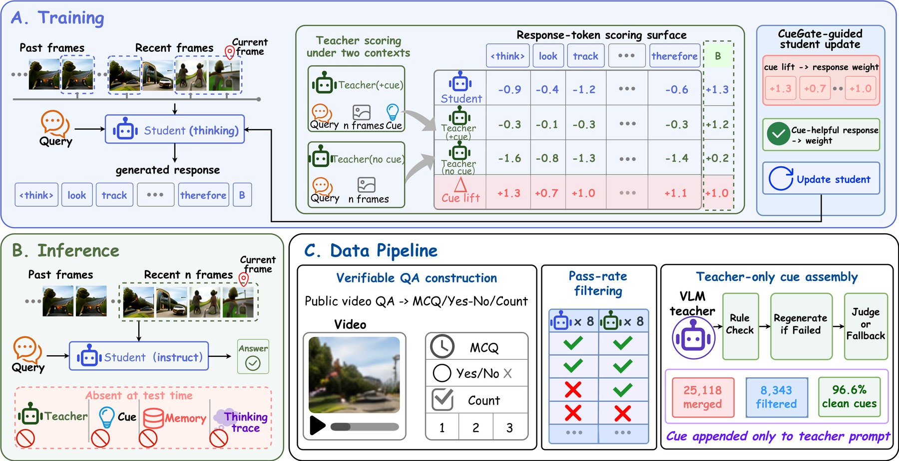
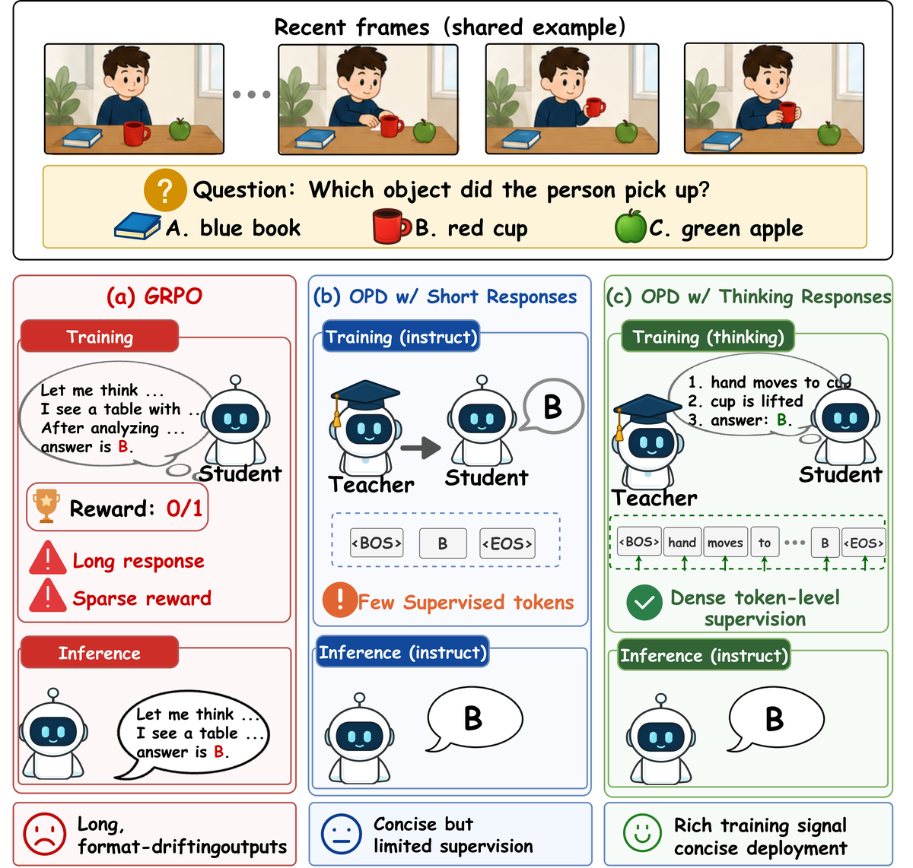
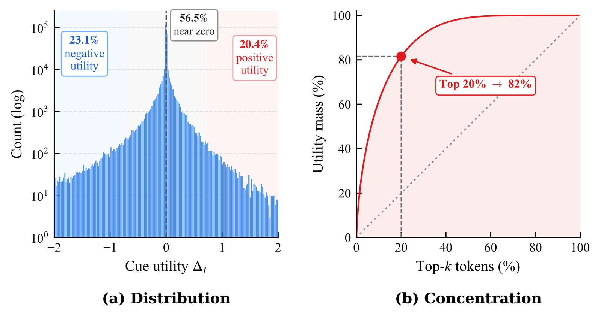
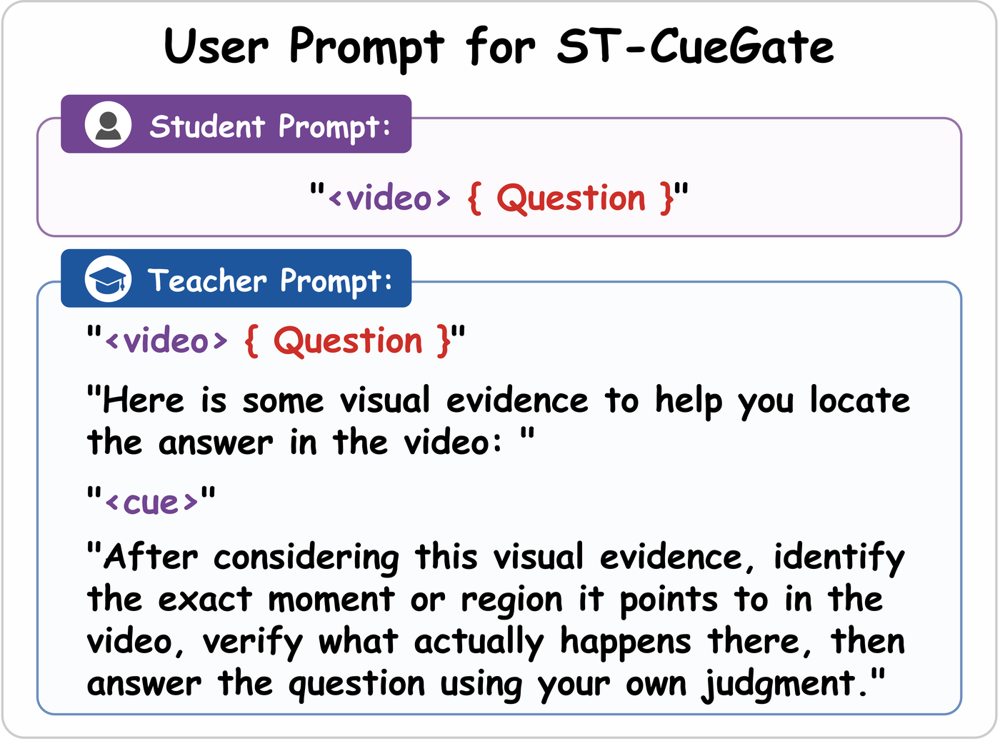

A Post-Training Recipe with Spatio-Temporal Cue Gating
for Streaming Video Understanding
1Tsinghua University · 2Zhejiang University ·
3The University of Hong Kong · 4LMMs-Lab
5Nanyang Technological University ·
6Hong Kong University of Science and Technology (Guangzhou)
✉Corresponding author
Streaming video understanding requires answering from the causally observed prefix of a video that is still unfolding. Most systems attack this with memory banks, retrieval, or KV-cache compression — yet a training-free recent-window baseline already matches them.
We take that as a hint and fix the inference path entirely: four recent frames at 1 fps, no memory, no retrieval, no compression, and no reasoning trace at test time. With the architecture and inference cost held constant, any gain has to come from the weights. Under that constraint a 4B student reaches 84.6 on StreamingBench and 69.3 OVO-Bench macro, passing its own 9B teacher on both, and beating HERMES-7B — the strongest streaming system we compare against — by 5.1 and 10.1 points.

StreamOPD is the recipe: a 25k verifiable video-QA pipeline, on-policy distillation with teacher and student both in thinking mode, and deployment in instruct mode. The training mode matters more than it looks — of the pairings we tried, only both-thinking converges, while both-instruct and teacher-thinking/student-instruct collapse early. Pure RL is the wrong tool here: teacher-free GRPO keeps its reward high while drifting to long rationales that break the deployed direct-answer format.

Once the recipe is fixed, the remaining question is not how big the teacher is but what it is shown — and how much that actually helped.
A grounded spatio-temporal cue helps the teacher unevenly, and the unevenness is extreme. Across 300,866 response tokens, 56.5% of cue-versus-no-cue contrasts are essentially zero and 23.1% are negative, while the top 20% of positive tokens carry 82% of the positive mass. Supplying the cue uniformly therefore spends most of the supervision where the cue did nothing.

The frozen teacher scores the same student response under two nested contexts that differ only in cue presence. The contrast is aggregated into a response-level proxy, standardized within a comparison group, and used to reweight the distillation advantage.

If every score in a group is negative, a less-negative response is still up-weighted. The gate ranks within the group rather than against a fixed bar.
Δ is per token, but one scalar multiplies every token advantage in the response. Per-token gating loses 3.2 points on OVO — individual contrasts are too noisy to act as weights.
α_g = 0 gives w ≡ 1 and recovers cue-only ViCuR exactly. A singleton group gets a neutral gate; a rejected cue trains as standard OPD.
The no-cue pass reuses the student's decoded frames and the same teacher pool. It costs 20–35% more time per step and touches training only through w.
The gating machinery is generic — any positive/negative view pair yields a weight. Replacing the negative view with a temporally shuffled video (the V-Zero formulation) keeps the mechanism but loses the gain. The requirement is clip-grounded provenance with a cue-specific reference: hold the frames and the realized trajectory fixed, and remove only the cue.
Instruct mode, recent-4-frame window. Each configuration is trained with three seeds; one model per run is selected on a held-out validation aggregate and evaluated on all benchmarks. Entries are means over the three runs.
| Model | Frames | StreamingBench | OVO Real-Time | OVO Backward | OVO Macro |
|---|---|---|---|---|---|
| Human | — | 91.46 | 93.2 | 92.3 | 92.77 |
| Online / Streaming Video LLMs | |||||
| Dispider-7B | 1 fps | 67.63 | 54.6 | 36.1 | 45.35 |
| TimeChat-Online-7B | 1 fps | 75.28 | 61.9 | 41.7 | 51.80 |
| StreamForest-7B | 1 fps | 77.26 | 61.2 | 52.0 | 56.60 |
| HERMES-7B | 1 fps | 79.44 | 69.0 | 49.4 | 59.20 |
| Post-Trained Models and References (StreamOPD, ours) | |||||
| Qwen3.5-9B (teacher) | 4 | 84.15 | 82.0 | 53.9 | 67.95 |
| Qwen3.5-4B (student) | 4 | 77.87 | 70.6 | 48.8 | 59.71 |
| + OPD | 4 | 83.91 | 80.5 | 51.2 | 65.89 |
| + ST-CueGate (OPD) | 4 | 84.55 | 82.6 | 56.0 | 69.34 |
| + ST-CueGate (OPSD) | 4 | 83.35 | 79.2 | 56.0 | 67.60 |
OVO-Bench per-track accuracy; Macro is the mean of the Real-Time and Backward category means. Gold marks the best value, underline the second best. All StreamOPD models are evaluated in instruct mode with a recent-4-frame window.
All variants share an identical backbone, dataset, and optimizer on the same 25k pool, so differences are attributable to the teacher condition alone.
| Method | Grounded | StreamingBench | OVO (excl. HLD) | Video-MME | LongVideoBench | Avg. |
|---|---|---|---|---|---|---|
| Qwen3.5-4B (student) | — | 77.87 | 59.94 | 64.22 | 57.74 | 64.94 |
| OPD (n=1) | — | 83.91 | 69.02 | 63.33 | 59.84 | 69.03 |
| OPD (n=4) | — | 83.83 | 70.09 | 64.07 | 61.26 | 69.81 |
| ExOPD (n=1) | ✗ | 84.29 | 68.38 | 63.78 | 60.36 | 69.20 |
| ViCuR cue-only (n=1) | ✓ | 84.27 | 67.98 | 60.56 | 54.00 | 66.70 |
| ViCuR cue-only (n=4) | ✓ | 84.49 | 67.86 | 64.11 | 60.73 | 69.30 |
| V-Zero (n=4) | ✓ | 83.99 | 67.71 | 61.67 | 60.06 | 68.36 |
| ST-CueGate (n=4) | ✓ | 84.55 | 71.93 | 64.85 | 61.41 | 70.69 |
Grounded denotes a teacher-side signal derived from the same underlying training clip. The OVO column excludes HLD. Avg. is the unweighted mean over the four benchmarks.
OPD lifts StreamingBench 77.9 → 83.9, within 0.3 of the teacher, and OVO excluding HLD by 9.1 points. Teacher-free GRPO merely matches the untrained student.
ST-CueGate improves on rollout-matched OPD across all four benchmarks and beats cue-only ViCuR everywhere — the gain comes from weighting the cue, not from the cue itself.
Every other configuration ends up below the untrained student on Video-MME. ST-CueGate is the only one that stays above the base model on all four benchmarks.
ST-CueGate exceeds the 9B teacher on six of nine OVO subtasks, on the OVO macro (69.34 vs 67.95), and on StreamingBench (84.55 vs 84.15).
OVO's HLD subtask scores refusing to answer unanswerable queries — a different skill from streaming recall, so we report it separately. Larger-teacher distillation costs abstention: HLD drops from 47.9 (student) to 38.7 (OPD), recovering to 45.7 with ST-CueGate. The loss is not intrinsic to the recipe. Replacing the 9B teacher with a frozen copy of the student's own initial policy — on-policy self-distillation — keeps most of the streaming gains and pushes HLD to 57.0, above both the untrained student (47.9) and the 9B teacher (47.3).
| Gate setting | StreamingBench | OVO (excl. HLD) | Video-MME | LongVideoBench | Avg. |
|---|---|---|---|---|---|
| n=1, batch, sequence | 84.23 | 68.93 | 65.11 | 59.69 | 69.49 |
| n=4, uid, sequence | 84.55 | 71.93 | 64.85 | 61.41 | 70.69 |
| n=4, uid, token | 84.23 | 68.72 | 63.52 | 59.99 | 69.12 |
| n=8, uid, sequence | 84.11 | 68.81 | 64.41 | 60.66 | 69.50 |
Token-wise gating loses most on OVO (−3.2) and LongVideoBench (−1.4): individual token contrasts are too noisy to serve as independent weights, while aggregating them at the response level gives a stabler signal.
| αg | StreamingBench | OVO (excl. HLD) | Video-MME | LongVideoBench | Avg. |
|---|---|---|---|---|---|
| 0.25 | 84.19 | 69.09 | 64.19 | 60.73 | 69.55 |
| 0.50 | 84.55 | 71.93 | 64.85 | 61.41 | 70.69 |
| 1.00 | 84.39 | 68.97 | 63.22 | 59.76 | 69.09 |
Raising the strength to 1.0 consistently hurts: the likelihood contrast is most useful as a moderate ranking signal rather than an aggressively amplified weight.
| Teacher | StreamingBench | OVO (excl. HLD) | Video-MME | LongVideoBench | Avg. |
|---|---|---|---|---|---|
| Qwen3.5-9B | 84.55 | 71.93 | 64.85 | 61.41 | 70.69 |
| Qwen3.5-27B | 83.59 | 67.52 | 61.04 | 54.38 | 66.63 |
The larger teacher is worse on all four benchmarks. This run reuses the 9B optimization and gate settings without re-tuning, so read it as evidence that teacher scale alone does not guarantee better on-policy supervision — not as a tuned upper bound for a 27B teacher.
The repository ships the patched trainer, the training and validation parquets, the streaming evaluators, and the data-construction pipeline. One launcher per row of the tables above.
The ST-CueGate model is on the Hub as UniX-Lab/StreamOPD-4B-ST-CueGate, already in HuggingFace format. The evaluators take the repo id directly, so reproducing its scores needs no training and no checkpoint merging.
bash scripts/eval/run_all.sh UniX-Lab/StreamOPD-4B-ST-CueGate streamopd_release 0,1,2,3 bash scripts/eval/score_all.sh streamopd_release
# 1. environment — vLLM and flash-attn are built from source git clone https://github.com/UniX-AI-Lab/StreamOPD.git && cd StreamOPD uv venv /path/to/env --python python3.12 && pip install -e ./verl --no-build-isolation # 2. point the shipped parquets at your local copy of the public videos python tools/data/retarget_video_root.py --root /your/dataset/root --check-exists # 3. train — ST-CueGate, the headline configuration ROLLOUT_N=4 CUE_GATE_GROUP_MODE=uid bash scripts/train/cuegate.sh # 4. merge the checkpoint and evaluate on four benchmarks bash scripts/merge_checkpoint.sh checkpoints/<experiment>/global_step_<N> bash scripts/eval/run_all.sh checkpoints/<experiment>/.../huggingface my_run 0,1,2,3 bash scripts/eval/score_all.sh my_run
Other rows are environment variables on the same launchers — TEACHER_MODEL=Qwen/Qwen3.5-4B gives the self-distillation variant, CUE_GATE_ALPHA=0 reduces to cue-only ViCuR, and CUE_GATE_LEVEL=token switches the gate granularity. Full walkthrough in the documentation: install, data, training, evaluation, and the method write-up with its negative results.
Human-aligned stress testing of video generators as future world-state predictors — 436 curated cases across four reasoning dimensions, plus a ~6K-pair preference benchmark.
@article{wu2026streamopd,
title = {StreamOPD: A Post-Training Recipe with Spatio-Temporal Cue Gating
for Streaming Video Understanding},
author = {Wu, Keming and Wang, Baoyi and Zhang, Kaichen and An, Xiang and
Yang, Zuhao and Wang, Sudong and Zhu, Haowei and Huang, Tingxuan and
Gao, Hongcheng and Wang, Bin},
journal = {arXiv preprint arXiv:XXXX.XXXXX},
year = {2026}
}